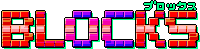
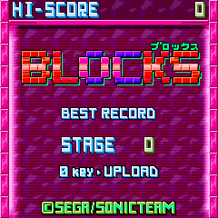
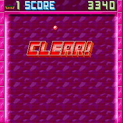
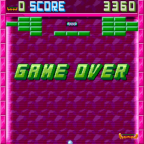

 |
||
■ 誰でも手軽に楽しめる簡単ルール！ ■ 『BLOCKS』の基本は誰でも一度は遊んだことのある「ブロック崩し」をベースとしています。 携帯アプリにありがちな、面白そうだけど操作がいまいちわからないといったことはなく、 誰でも手軽に遊べます。 |
||
|
<< ゲームの説明 >> |
| ■ どんなゲーム？ |
 |
ブロック崩しです。 |
| ■ 基本操作 |
ゲームを開始すると、右斜め上からボールが落ちてきます。 ※ボールのスピードが一定以上速くなると赤く変化し、ブロックの破壊力が増します
|
| ■ ステージクリア |
 |
ブロックはボールに当たると破壊されます（中には破壊不可能なブロックもあります）。 コア(核)のブロックを破壊すればステージクリアとなります。 |
| ■ ゲームオーバー |
 |
ボールをはね返せず、下に落としてしまうとミスとなり残機（左上に表示）を一機失います。 残機が０の状態でミスしてしまうとゲームオーバーです。 ※尚この画面で右ソフトキー「リトライ」を押すとコンティニューできますが、以後の成績は記録されません |
<<戻る>>
© SEGA